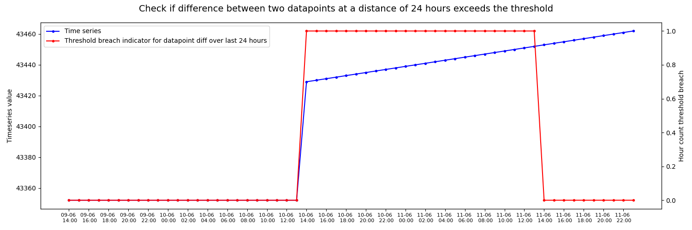

Note
Go to the end to download the full example code
Threshold breach check for difference between two data points over a period of time
Example of visualizing breach of threshold in hour count in a time series representing running hours of a piece of equipment.
/Users/neringaaltanaite/Project/indsl/indsl/equipment/volume_vessel.py:31: UserWarning: Couldn't import fluids.numba_vectorized: No module named 'fluids'. Default to import fluids.vectorized.
warnings.warn(
import os
from datetime import datetime, timedelta
import matplotlib.pyplot as plt
import numpy as np
import pandas as pd
from indsl.data_quality.datapoint_diff import datapoint_diff_over_time_period
# import generated data
base_path = "" if __name__ == "__main__" else os.path.dirname(__file__)
data = pd.read_csv(os.path.join(base_path, "../../datasets/data/hour_count.csv"), index_col=0)
data = data.squeeze()
data.index = pd.to_datetime(data.index)
# apply function to calculate difference between datapoint over a period of 1 day
hour_count_default_threshold = datapoint_diff_over_time_period(data, pd.Timedelta("1D"), 24, pd.Timedelta("1H"))
# Resample and forward fill generated step series
resampled_step_series_default_threshold = hour_count_default_threshold.resample("60min")
default_threshold_forward_filled = resampled_step_series_default_threshold.ffill()
# Plot unchanged signal identification series against actual data
fig, ax1 = plt.subplots(figsize=(15, 5))
ax1.plot(data.index, data, label="Time series", marker=".", color="blue")
values = np.arange(data.index[0], data.index[-1], timedelta(minutes=120)).astype(datetime)
ax1.set_xticks(values)
ax1.set_xticklabels([ts.strftime("%d-%m \n %H:%M") for ts in values], fontsize=8)
ax2 = ax1.twinx()
ax2.plot(
data.index,
default_threshold_forward_filled,
label="Threshold breach indicator for datapoint diff over last 24 hours",
marker=".",
color="red",
)
lines1, labels1 = ax1.get_legend_handles_labels()
lines2, labels2 = ax2.get_legend_handles_labels()
ax2.legend(lines1 + lines2, labels1 + labels2, loc=0)
plt.xlabel("Timestamp")
ax1.set_ylabel("Timeseries value")
ax2.set_ylabel("Hour count threshold breach")
fig.suptitle(
"Check if difference between two datapoints at a distance of 24 hours exceeds the threshold",
fontsize=14,
)
fig.tight_layout()
plt.show()
Total running time of the script: (0 minutes 4.174 seconds)